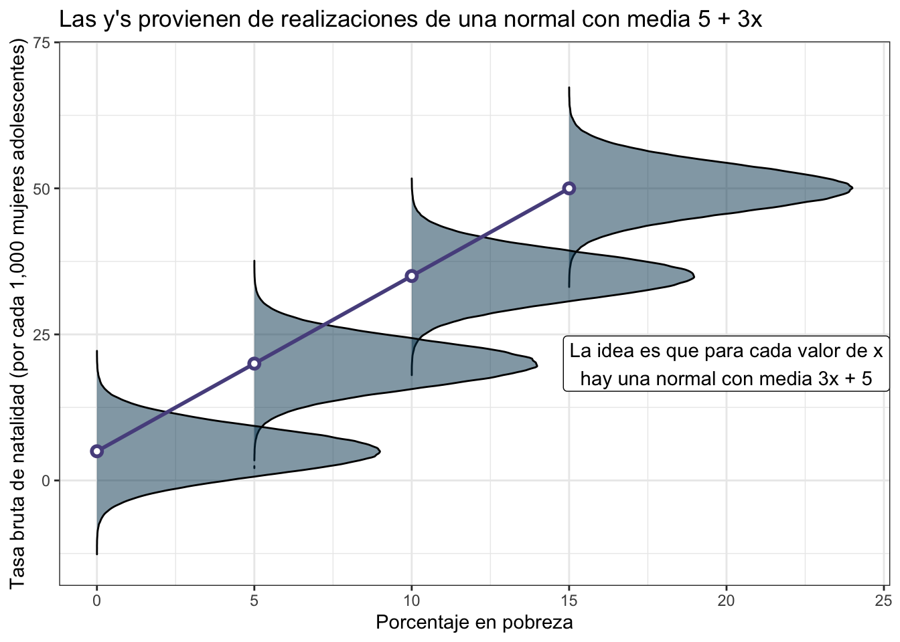
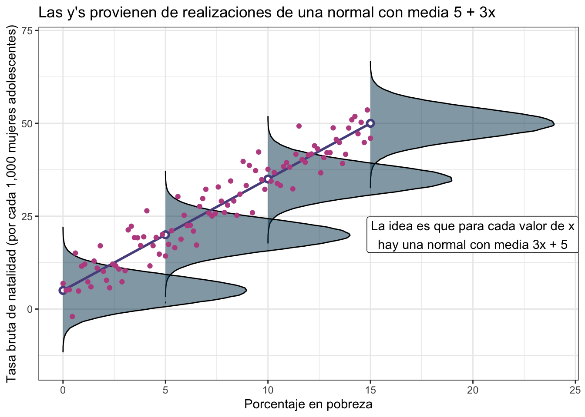
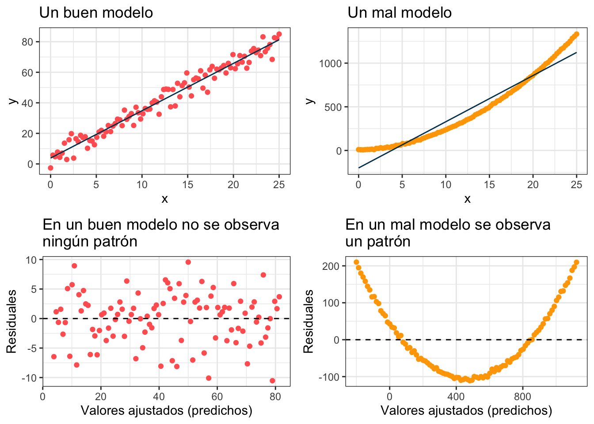
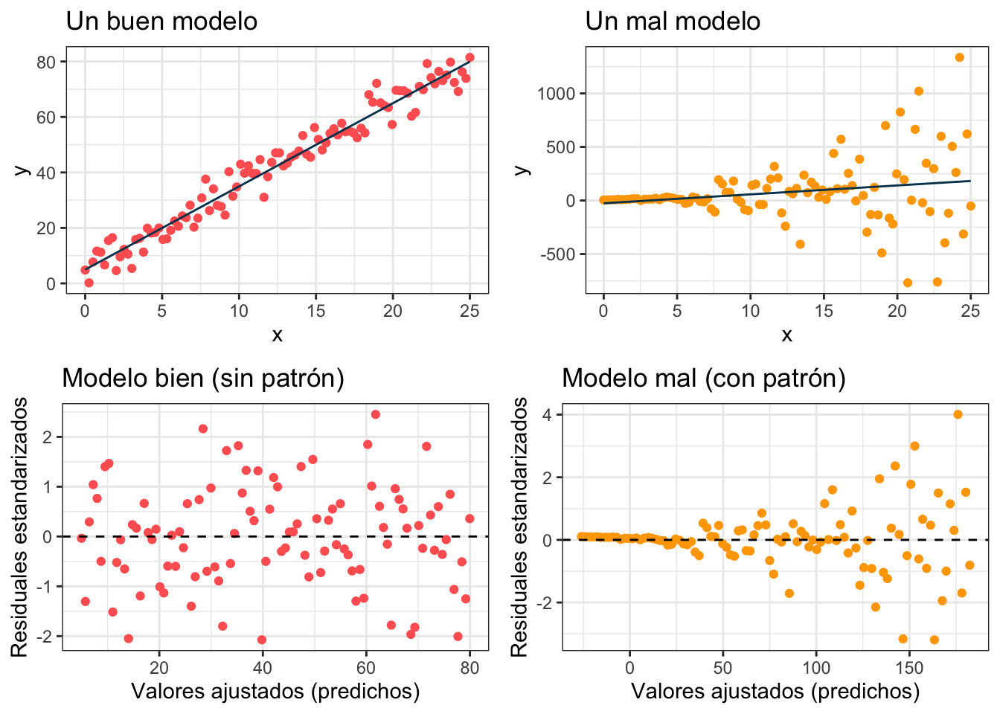
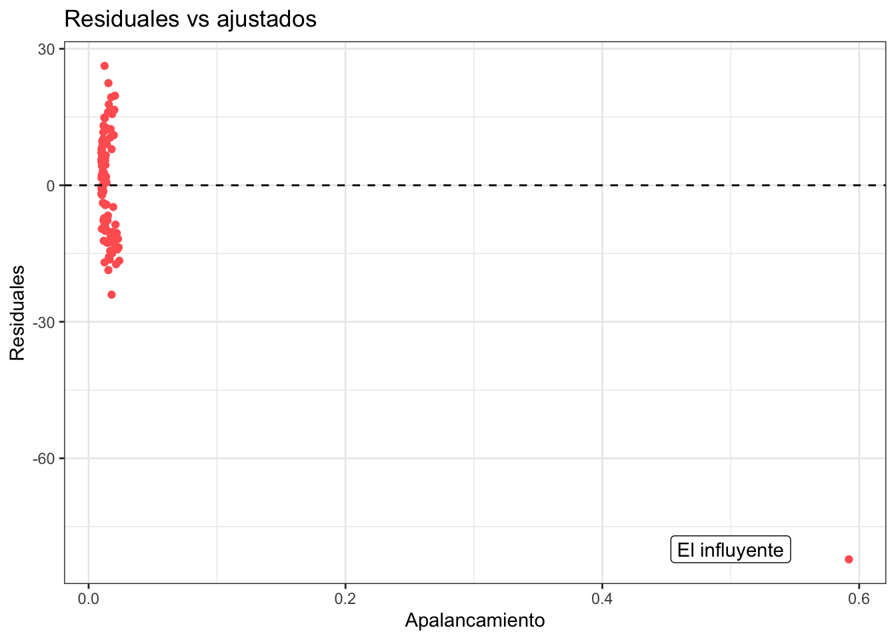

library(tidyverse)
library(tidymodels)
library(ggfortify) #autoplot para diagnósticos
library(rstanarm) #para bayesiana
library(poissonreg) #modelo Poisson
#Siempre que uses tidymodels
tidymodels_prefer()Regresiones (parte 1)
Paquetes y datos a utilizar
A lo largo de esta sección usaremos los siguientes paquetes:
En general usaremos la filosofía tidymodels para combinar los resultados con el tidyverse. Si quieres saber más de tidymodels te recomiendo checar su libro o su página web.
Embarazo adolescente y pobreza
Para los datos usaremos la información de Utts y Heckard para determinar si hay una relación entre embarazo adolescente y pobreza.
emb_pob <- read_delim("https://online.stat.psu.edu/stat462/sites/onlinecourses.science.psu.edu.stat462/files/data/poverty/index.txt")Rows: 51 Columns: 6
── Column specification ────────────────────────────────────────────────────────
Delimiter: "\t"
chr (1): Location
dbl (5): PovPct, Brth15to17, Brth18to19, ViolCrime, TeenBrth
ℹ Use `spec()` to retrieve the full column specification for this data.
ℹ Specify the column types or set `show_col_types = FALSE` to quiet this message.Las variables Brth15to17 y Brth18to19 son las tasas brutas de natalidad por cada 1000 mujeres (en el año 2002) en adolescentes de 15 a 17 años y de 18 a 19 respectivamente. La variable PovPct representa la proporción (%) de la población que vive bajo la línea de pobreza en cada una de las entidades de EEUU (Location). Las variables ViolCrime y TeenBrth no se explican por lo que no las usaremos.
Regresiones lineales
Usaremos Brth15to17 y PovPct para estudiar si hay una relación entre la tasa de natalidad en adolescentes y el porcentaje de la población en pobreza. Para ello comenzaremos con graficar:
ggplot(emb_pob) +
geom_point(aes(x = PovPct, y = Brth15to17), color = "#bc5090", size = 3) +
labs(
x = "Porcentaje en pobreza",
y = "Tasa bruta de natalidad (por cada 1,000 mujeres adolescentes)",
title = "Relación entre tasa bruta de natalidad en adolescentes\nde 15 a 19 años y porcentaje en pobreza"
) +
theme_bw()Parece que a mayor porcentaje de pobreza, mayor tasa bruta de natalidad en adolescentes. ## Planteamiento clásico
Si la relación fuera perfecta todos los casos caerían exactamente en una línea recta como sigue:
donde es necesario especificar dos parámetros: el intercepto (el valor que toma cuando la \(x\) en este caso PovPct vale cero) y la pendiente (el valor que relaciona por cada unidad de aumento en PovPct cuánto aumenta Brth15to17).
La ecuación de la línea está dada por:
\[ y = \beta_0 + \beta_1 x \]
donde \(\beta_0\) es el intercepto y \(\beta_1\) la pendiente. Usando la terminología de arriba:
\[ \text{Brth15to17} = \text{Intercepto} + \text{Pendiente}\times \text{PovPct} \] en particular en ese ejemplo:
\[ \text{Brth15to17} = 5 + 3\cdot \text{PovPct} \]
La idea es que el intercepto (\(\beta_0\) ó \(5\)) te indica dónde comienza tu línea cuando no tienes \(x\)’s (es decir cuando \(\text{PovPct} = 0\)). El intercepto controla la altura de la línea como puedes ver en la siguiente gráfica donde puse varios interceptos distintos:

por otro lado la idea de la pendiente (\(\beta_1\) ó \(3\)) es retratar cómo cambia la \(y\) (en este caso \(\text{Brth15to17}\)) por cada unidad que cambia la \(x\) (en este caso \(\text{PovPct}\)). El valor de \(3\) por ejemplo indica que por cada aumento en 1 en \(\text{PovPct}\) la variable \(\text{Brth15to17}\) aumenta en \(3\). Este cambio es proporcional; es decir si ahora \(\text{PovPct}\) aumenta 4 (por decir algo) \(\text{Brth15to17}\) aumenta \(3\times 4 = 12\) unidades. La siguiente gráfica muestra varias líneas todas comenzando en el mismo intercepto de \(5\):
Como ya vimos en la primer figura el mundo no es tan perfecto que todo sea una línea recta. Hay un poco de aleatoriedad involucrada (sea por variables no medidas, por errores de medición o porque el mundo no sea determinista). Por lo cual se plantea que en lugar de que la \(y\) sea exactamente \(\beta_0 + \beta_1 x\) planteamos que la \(y\) proviene de una variable aleatoria normal donde la media de esa normal es \(\beta_0 + \beta_1 x\); es decir:
\[ y \sim \textrm{Normal}( \beta_0 + \beta_1 x, \sigma^2) \]
o dicho de otra manera:
\[ \text{Brth15to17} \sim \textrm{Normal}(\text{Intercepto} + \text{Pendiente}\times \text{PovPct}, \sigma^2) \]
donde la \(\sigma^2\) es la varianza de dicha normal. Puesto gráficamente lo que esto quiere decir es que si, por ejemplo, el intercepto es \(5\) y la pendiente \(3\) entonces cada medición de \(y\) viene de una normal ligeramente distinta:
\[ \text{Brth15to17} \sim \textrm{Normal}(5 + 3\times \text{PovPct}, \sigma^2) \]

Dicho de otra forma, suponemos que en un mundo perfecto los valores de \(y\) (Brth15to17) estarían completamente determinados por los de \(x\) (PovPct) mediante la ecuación de la recta. Pero como el mundo no es perfecto entonces la \(y\) proviene de una normal con promedio dado por la recta. Los puntos (como puedes ver an la siguiente gráfica) se centran más en torno a los promedios de las normales sin embargo están colocados aleatoriamente pues corresponden a distintas realizaciones de \(y\).

Por ejemplo si el porcentaje de pobreza (PovPct) es \(10\) entonces la normal de la que provienen estos datos es:
\[ \text{Brth15to17} \sim \textrm{Normal}(\underbrace{5 + 3\times 10}_{35}, \sigma^2) \]
mientras que si el porcentaje en pobreza es \(20\) entonces la normal es:
\[ \text{Brth15to17} \sim \textrm{Normal}(\underbrace{5 + 3\times 20}_{65}, \sigma^2) \]
Por supuesto que no hay nada de especial con el modelo normal y alguien podría elegir otra distribución (por ejemplo una Gamma) y establecer que:
\[ \text{Brth15to17} \sim \textrm{Gamma}(\text{Intercepto} + \text{Pendiente}\times \text{PovPct}, \beta) \]
Estos modelos son algunos de los lineales generalizados y los discutiremos más adelante. Por ahora nos quedaremos con la idea del modelo dado por:
\[ \text{Brth15to17} \sim \textrm{Normal}(\text{Intercepto} + \text{Pendiente}\times \text{PovPct}, \sigma^2) \]
Nota quizá conoces la regresión lineal bajo la idea clásica de que \[ y = \beta_0 + \beta_1 x + \epsilon \] donde \(\epsilon\sim\text{Normal}(0,\sigma^2)\) son los errores normales. Esta definición es equivalente a la que damos aquí pues por propiedades aditivas de la normal \(\epsilon + \beta_0 + \beta_1 x\) se sigue distribuyendo normal pero con la media ahora dada por lo agregado (\(\beta_0 + \beta_1 x\)). Las ventajas de esta notación es que un modelo para regresión Poisson es simplemente: \[ y \sim \textrm{Poisson}(\beta_0 + \beta_1 x) \] y un modelo para regresión logística es: \[ y \sim \textrm{Bernoulli}\big(\textrm{logit}(\beta_0 + \beta_1 x)\big) \]
Planteamiento en R
Lo que nos toca ahora es programar nuestro modelo para ello seguiremos la filosofía de tidymodels que pretende unificar bajo la misma notación todos los modelos. La notación básica es como sigue:
modelo %>%
set_engine("tipo de ajuste") %>%
fit("formula a ajustar", data = tus_datos)A partir del ajuste se pueden predecir cosas con predict:
modelo %>%
set_engine("tipo de ajuste") %>%
fit("formula a ajustar", data = tus_datos) %>%
predict()o extraer nuevos datos con extract_fit_engine y tidy:
modelo %>%
set_engine("tipo de ajuste") %>%
fit("formula a ajustar", data = tus_datos) %>%
extract_fit_engine() %>%
tidy()Comencemos con nuestro primer modelo: una regresión lineal clásica dada por:
\[ \text{Brth15to17} \sim \textrm{Normal}(\text{Intercepto} + \text{Pendiente}\times \text{PovPct}, \sigma^2) \]
En R el engine que necesitamos es “lm” que es el clásico:
#Ajusta un modelo lineal
#Brth15to17 = intercepto + pendiente*PovPct
modelo_ajustado <- linear_reg() %>%
set_engine("lm") %>%
fit(Brth15to17 ~ PovPct, data = emb_pob) #Notación y ~ xNota que a diferencia de Stata, R no arroja demasiados resultados. Podemos usar extract_fit_engine combinado con summary para obtenerlos:
#Ajusta un modelo lineal
#Brth15to17 = intercepto + pendiente*PovPct
modelo_ajustado %>%
extract_fit_engine() %>%
summary()
Call:
stats::lm(formula = Brth15to17 ~ PovPct, data = data)
Residuals:
Min 1Q Median 3Q Max
-11.2275 -3.6554 -0.0407 2.4972 10.5152
Coefficients:
Estimate Std. Error t value Pr(>|t|)
(Intercept) 4.2673 2.5297 1.687 0.098 .
PovPct 1.3733 0.1835 7.483 1.19e-09 ***
---
Signif. codes: 0 '***' 0.001 '**' 0.01 '*' 0.05 '.' 0.1 ' ' 1
Residual standard error: 5.551 on 49 degrees of freedom
Multiple R-squared: 0.5333, Adjusted R-squared: 0.5238
F-statistic: 56 on 1 and 49 DF, p-value: 1.188e-09o bien con tidy si deseamos nos devuelva una tabla de resultados:
#Ajusta un modelo lineal
#Brth15to17 = intercepto + pendiente*PovPct
modelo_ajustado %>%
extract_fit_engine() %>%
tidy()# A tibble: 2 × 5
term estimate std.error statistic p.value
<chr> <dbl> <dbl> <dbl> <dbl>
1 (Intercept) 4.27 2.53 1.69 0.0980
2 PovPct 1.37 0.184 7.48 0.00000000119Según el tipo de regresión que estemos haciendo es el tipo de tabla que regresa tidy (ver ?tidy). En particular, por ejemplo, podemos modificar para que devuelva intervalos de confianza al 90%:
#Ajusta un modelo lineal
#Brth15to17 = intercepto + pendiente*PovPct
modelo_ajustado %>%
tidy(conf.int = T, conf.level = 0.90)# A tibble: 2 × 7
term estimate std.error statistic p.value conf.low conf.high
<chr> <dbl> <dbl> <dbl> <dbl> <dbl> <dbl>
1 (Intercept) 4.27 2.53 1.69 0.0980 0.0260 8.51
2 PovPct 1.37 0.184 7.48 0.00000000119 1.07 1.68En este caso, el modelo estima que el intercepto (\(\beta_0\)) es \(4.27\) y la pendiente (\(\beta_1\)) es \(1.37\). Como son estimadores del verdadero valor se denotan con gorrito: \(\hat\beta_0 = 4.27\) y \(\hat\beta_1 = 1.37\).
Podemos utilizar la función de predict para que el modelo nos muestre cómo cree que son los verdaderos valores en relación a los ajustados:
#Ajusta un modelo lineal
#Brth15to17 = intercepto + pendiente*PovPct
predichos <- modelo_ajustado %>%
predict(new_data = emb_pob)
intervalo_predichos <- modelo_ajustado %>%
predict(new_data = emb_pob, type = "pred_int", level = 0.95)
#Juntamos los predichos con los observados
obs_y_modelo <- emb_pob %>%
cbind(predichos) %>%
cbind(intervalo_predichos)
#Graficamos
ggplot(obs_y_modelo) +
geom_ribbon(aes(x = PovPct, ymin = .pred_lower, ymax = .pred_upper),
fill = "#003f5c", size = 1, alpha = 0.5) +
geom_point(aes(x = PovPct, y = Brth15to17), color = "#bc5090", size = 3) +
geom_line(aes(x = PovPct, y = .pred),
color = "#003f5c", size = 1) +
labs(
x = "Porcentaje en pobreza",
y = "Tasa bruta de natalidad (por cada 1,000 mujeres adolescentes)",
title = "Relación entre tasa bruta de natalidad en adolescentes\nde 15 a 19 años y porcentaje en pobreza"
) +
theme_bw()
Nada más a ojo no parece que el modelo sea el mejor pues puedes ver que no explica bien la variabilidad (los observados varían mucho respecto al intervalo). La \(R^2\), una métrica que explica cuánto de la varianza captura el modelo tampoco es muy buena:
resumen_ajuste <- modelo_ajustado %>%
extract_fit_engine() %>%
summary()
#R^2 clásica
resumen_ajuste$r.squared[1] 0.533328#R^2 ajustada
resumen_ajuste$adj.r.squared[1] 0.523804Podemos checar las diferentes gráficas de diagnóstico:
library(ggfortify)
autoplot(modelo_ajustado, which = 1:5)
Veamos qué significa cada una de ellas y juguemos un poco con R para irlas modificando.
Residuales contra ajustados
Los residuales son la diferencia entre el modelo (\(\hat{y}\)) y lo real \(y\). En el caso que estábamos trabajando tenemos que con nuestro modelo podemos predecir los valores de Brth15to17 a partir del porcentaje en pobreza PovPct. A los valores predichos por el modelo de Brth15to17 les ponemos un gorro encima y los llamamos: \(\widehat{\text{Brth15to17}}\). Estos están dados por la siguiente función:
\[ \widehat{\text{Brth15to17}} = 4.26 + 1.37 \cdot \text{PovPct} \]
por ejemplo para el porcentaje en pobreza de \(20.1\) obtendríamos:
\[ \widehat{\text{Brth15to17}} = 4.26 + 1.37 \cdot \text{PovPct} = 31.797 \]
por otro lado el verdadero valor de cuando el PovPct es \(20.1\) (estado de Alabama) es \(\text{Brth15to17} = 31.5\). La diferencia entre el verdadero valor (\(\text{Brth15to17} = 31.5\)) y el predicho por el modelo (\(\widehat{\text{Brth15to17}} = 31.797\)) se conoce como el residual. La idea es que en un modelo bueno no debe haber patrones en los residuales (todos deben de flotar en torno al cero pero no mostrar un patrón).
Veamoslo en nuestra base:
obs_y_modelo <- obs_y_modelo %>%
mutate(residuales = Brth15to17 - .pred)
ggplot(obs_y_modelo) +
geom_point(aes(x = .pred, y = residuales), color = "#ff6361") +
labs(
x = "Valores ajustados (predichos)",
y = "Residuales",
title = "Residuales vs ajustados"
) +
theme_bw() +
geom_hline(aes(yintercept = 0), linetype = "dashed")En esta gráfica el modelo predice mejor rumbo al final que en medio y esto parece estar corroborado por la gráfica del modelo (previa). Nada más para darnos una idea veamos una gráfica de malos residuales y una de buenos

Escala locación
Representa la escala locación contra los residuales estandarizados. La idea de la gráfica es ver que la varianza \(\sigma^2\) del modelo no cambie conforme cambia la \(x\) (propiedad de homoscedasticidad). Para ello graficamos los residuales estandarizados dados por los residuales mismos dividos entre su desviación estándar:
\[ r_{\text{Std}} = \frac{\hat{y} - y}{\text{sd}(\hat{y} - y)} = \frac{\text{Residuales}}{\text{sd}\big(\text{Residuales}\big)} \]
estos residuales estandarizados los podemos calcular en R como sigue:
obs_y_modelo <- obs_y_modelo %>%
mutate(residuales_std = residuales/sd(residuales))Si los graficamos contra los valores ajustados no deberíamos de ver ningún patrón:
ggplot(obs_y_modelo) +
geom_point(aes(x = .pred, y = residuales_std), color = "#ff6361") +
labs(
x = "Valores ajustados (predichos)",
y = "Residuales estandarizados",
title = "Escala Locación"
) +
theme_bw() +
geom_hline(aes(yintercept = 0), linetype = "dashed")
Podemos ver cómo se ven estos puntos en el modelo ideal vs en un modelo donde la \(\sigma^2\) depende de la \(x\):

Normal cuantil cuantil
La segunda gráfica corresponde a una gráfica cuantil cuantil. Esta la utilizamos para verificar la hipótesis de normalidad. En una gráfica cuantil cuantil se grafican los cuantiles de los residuales contra los cuantiles teóricos de la normal. Por ejemplo si la hacemos con sólo 4 puntos se vería algo así:

Podemos armar una gráfica cuantil cuantil con ggplot2:
ggplot(obs_y_modelo, aes(sample = residuales)) +
stat_qq(color = "#ff6361") +
stat_qq_line(color = "#58508d") +
theme_bw() +
labs(
x = "Cuantiles teóricos de la normal",
y = "Cuantiles observados de los residuales",
title = "Gráfica qq"
)
La idea de la gráfica cuantil cuantil es que los puntos sigan la línea lo más posible. Veamos cómo se ve con los datos bien (y los mal)

Residuales contra apalancamiento
El apalancamiento representa qué tanto cambia el modelo al quitar una sola observación. Para poner un ejemplo considera los siguientes datos donde hay un valor atípico y selecciono dos puntos de interés en dos colores:

Veamos cómo cambia la regresión si dejo todos los puntos, si quito el normal y si quito el influyente:

Nota que el modelo no cambia prácticamente nada cuando hago la regresión sin el dato que marqué como normal pero cambia mucho cuando quito el que marqué como influyente. La gráfica de residuales contra apalancamiento muestra también el valor extraño:

El apalancamiento mide la influencia de un dato y en R se puede calcular con hatvalues. Los datos con mayor apalancamiento siempre valen la pena checarlos para verificar que todo opera en orden.
apalancamiento <- modelo_ajustado %>%
extract_fit_engine() %>%
hatvalues()
obs_y_modelo <- obs_y_modelo %>%
cbind(apalancamiento)
#Graficamos residuales contra apalancamiento
ggplot(obs_y_modelo) +
geom_point(aes(x = apalancamiento, y = residuales), color = "#ff6361") +
labs(
x = "Apalancamiento",
y = "Residuales",
title = "Residuales vs ajustados"
) +
theme_bw() +
geom_hline(aes(yintercept = 0), linetype = "dashed")
Distancia de Cook
La distancia de Cook es un concepto similar al apalancamiento que identifica observaciones influyentes. Aquellos valores con distancia de Cook alta vale la pena revisar. En R podemos usar cooks.distance para calcular la distancia de Cook.
distanciaCook <- modelo_ajustado %>%
extract_fit_engine() %>%
cooks.distance()
obs_y_modelo <- obs_y_modelo %>%
cbind(distanciaCook)
#Graficamos residuales contra apalancamiento
ggplot(obs_y_modelo) +
geom_col(aes(x = 1:nrow(obs_y_modelo), y = distanciaCook), fill = "#ff6361") +
labs(
x = "Observación (número de entrada en la base)",
y = "Distancia de Cook",
title = "Distancia de Cook"
) +
theme_bw() podemos ver que en el ejemplo anterior (el de la observación influyente) la distancia de Cook es exagerada, tan exagerada que ni se alcanzan a ver los otros:

Ejercicio
- Corre el siguiente código para generar una base de datos de nombre
datLongque contiene \(4\) grupos. Para cada grupo genere una regresión lineal de la forma:
\[ y = \beta_0 + \beta_1 x \]
Identifica cuáles regresiones sí ajustan bien y cuáles no mediante los gráficos de diagnóstico. Finalmente grafica tus datos \(x\) contra \(y\) y la regresión para ver que lo hayas hecho bien. ¿Hay alguna forma de corregir alguna de las que no ajusta bien?
dat <- datasets::anscombe
datLong <- data.frame(
grupo = rep(1:4, each = 11),
x = unlist(dat[,c(1:4)]),
y = unlist(dat[,c(5:8)])
)
rownames(datLong) <- NULL- Lee la base de datos de \(n = 345\) niños entre \(6\) y \(10\) años de Kahn, Michael (2005). Las variables de interés son \(y = \text{FEV}\) el volumen de expiración forzada y \(x = \text{edad}\) en años. Realiza una regresión lineal. Justifica que no se cumple la homocedasticidad mediante una gráfica de escala locación.
¿Y si lo hacemos bayesiano?
Para hacer la misma regresión lineal pero con estadística bayesiana podemos nada más cambiar el engine:
#Ajusta un modelo lineal
#Brth15to17 = intercepto + pendiente*PovPct
modelo_bayesiano <- linear_reg() %>%
set_engine("stan") %>%
fit(Brth15to17 ~ PovPct, data = emb_pob) #Notación y ~ xY podemos ver el ajuste:
modelo_bayesiano %>%
extract_fit_engine() %>%
summary()
Model Info:
function: stan_glm
family: gaussian [identity]
formula: Brth15to17 ~ PovPct
algorithm: sampling
sample: 4000 (posterior sample size)
priors: see help('prior_summary')
observations: 51
predictors: 2
Estimates:
mean sd 10% 50% 90%
(Intercept) 4.3 2.6 1.0 4.3 7.5
PovPct 1.4 0.2 1.1 1.4 1.6
sigma 5.7 0.6 5.0 5.6 6.4
Fit Diagnostics:
mean sd 10% 50% 90%
mean_PPD 22.3 1.1 20.8 22.2 23.6
The mean_ppd is the sample average posterior predictive distribution of the outcome variable (for details see help('summary.stanreg')).
MCMC diagnostics
mcse Rhat n_eff
(Intercept) 0.0 1.0 3643
PovPct 0.0 1.0 3574
sigma 0.0 1.0 3075
mean_PPD 0.0 1.0 3919
log-posterior 0.0 1.0 1560
For each parameter, mcse is Monte Carlo standard error, n_eff is a crude measure of effective sample size, and Rhat is the potential scale reduction factor on split chains (at convergence Rhat=1).o realizar predicciones:
predichos <- modelo_bayesiano %>%
extract_fit_engine() %>%
predict(new_data = emb_pob)
ic <- modelo_bayesiano %>%
extract_fit_engine() %>%
predictive_interval(newdata = emb_pob, prob = 0.95) #Para bayesiana
#Juntamos los predichos con los observados
obs_y_modelo <- emb_pob %>%
cbind(predichos) %>%
cbind(ic)
#Graficamos
ggplot(obs_y_modelo) +
geom_ribbon(aes(x = PovPct, ymin = `2.5%`, ymax = `97.5%`),
fill = "#003f5c", size = 1, alpha = 0.5) +
geom_point(aes(x = PovPct, y = Brth15to17), color = "#ffa600", size = 3) +
geom_line(aes(x = PovPct, y = predichos),
color = "#003f5c", size = 1) +
labs(
x = "Porcentaje en pobreza",
y = "Tasa bruta de natalidad (por cada 1,000 mujeres adolescentes)",
title = "Relación entre tasa bruta de natalidad en adolescentes\nde 15 a 19 años y porcentaje en pobreza"
) +
theme_bw()
Para validación del modelo puedes checar esta página.
Ejercicio
- Utilice las opciones de
enginepara cambiar elprior_interceptdel intercepto a unatde Student y elpriorde los coeficientes a unaLaplace. ¿Cambia mucho el resultado?
Modelos lineales generalizados
Regresión Poisson (conteo)
Anteriormente planteamos el modelo
\[ y \sim \textrm{Normal}(\beta_0 + \beta_1 x, \sigma^2) \]
podemos cambiar la distribución normal por una Poisson si tenemos datos de conteo, por ejemplo:
\[ y \sim \textrm{Poisson}(\beta_0 + \beta_1 x) \]
¡Y ya tenemos una regresión Poisson! Ésta no es la clásica pues es bien difícil de controlar numéricamente. La Poisson clásica tiene una exponencial adentro:
\[ y \sim \textrm{Poisson}\big(\exp(\beta_0 + \beta_1 x)\big) \]
Usaremos esta última para los modelos. Para ello nos apoyaremos del engine de glm (por generalized linear model)
Para los datos usaremos la información de Generalized Linear Models for Cross-Classified Data from the WFS. World Fertility Survey Technical Bulletins . Podemos leerlos como sigue:
niños <- read_table("https://data.princeton.edu/wws509/datasets/ceb.dat",
skip = 1, col_names = F)
colnames(niños) <- c("Fila", "dur", "res", "educ", "mean", "var", "n", "y")
niños <- niños %>% mutate(y = round(y))La base contiene la dur la duración del matrimonio, res la residencia (suva, urbano y rural), el nivel educativo educ, la media y la varianza del número de niños nacidos y n la cantidad de mujeres en cada grupo. La variable y contiene el producto de mean*n para obtener el total de niños nacidos para todas las mujeres en cada grupo.
Podemos especificar fácilmente un modelo Poisson para los conteos:
modelo_poisson <- poisson_reg() %>%
set_engine("glm") %>%
fit(y ~ educ, data = niños)podemos obtener el summary:
modelo_poisson %>%
extract_fit_engine() %>%
summary()
Call:
stats::glm(formula = y ~ educ, family = stats::poisson, data = data)
Deviance Residuals:
Min 1Q Median 3Q Max
-21.757 -8.364 -2.780 3.087 51.573
Coefficients:
Estimate Std. Error z value Pr(>|z|)
(Intercept) 5.38780 0.01594 338.06 < 2e-16 ***
educnone 0.16257 0.02168 7.50 6.39e-14 ***
educsec+ -2.13937 0.05178 -41.32 < 2e-16 ***
educupper -0.88738 0.02951 -30.07 < 2e-16 ***
---
Signif. codes: 0 '***' 0.001 '**' 0.01 '*' 0.05 '.' 0.1 ' ' 1
(Dispersion parameter for poisson family taken to be 1)
Null deviance: 13735.6 on 69 degrees of freedom
Residual deviance: 9076.8 on 66 degrees of freedom
AIC: 9514.3
Number of Fisher Scoring iterations: 5o crear un tibble:
modelo_poisson %>%
extract_fit_engine() %>%
tidy()# A tibble: 4 × 5
term estimate std.error statistic p.value
<chr> <dbl> <dbl> <dbl> <dbl>
1 (Intercept) 5.39 0.0159 338. 0
2 educnone 0.163 0.0217 7.50 6.39e- 14
3 educsec+ -2.14 0.0518 -41.3 0
4 educupper -0.887 0.0295 -30.1 1.22e-198o también podemos ajustarlo de manera bayesiana:
poisson_reg() %>%
set_engine("stan") %>%
fit(y ~ educ, data = niños) %>%
extract_fit_engine() %>%
summary()
SAMPLING FOR MODEL 'count' NOW (CHAIN 1).
Chain 1:
Chain 1: Gradient evaluation took 3.7e-05 seconds
Chain 1: 1000 transitions using 10 leapfrog steps per transition would take 0.37 seconds.
Chain 1: Adjust your expectations accordingly!
Chain 1:
Chain 1:
Chain 1: Iteration: 1 / 2000 [ 0%] (Warmup)
Chain 1: Iteration: 200 / 2000 [ 10%] (Warmup)
Chain 1: Iteration: 400 / 2000 [ 20%] (Warmup)
Chain 1: Iteration: 600 / 2000 [ 30%] (Warmup)
Chain 1: Iteration: 800 / 2000 [ 40%] (Warmup)
Chain 1: Iteration: 1000 / 2000 [ 50%] (Warmup)
Chain 1: Iteration: 1001 / 2000 [ 50%] (Sampling)
Chain 1: Iteration: 1200 / 2000 [ 60%] (Sampling)
Chain 1: Iteration: 1400 / 2000 [ 70%] (Sampling)
Chain 1: Iteration: 1600 / 2000 [ 80%] (Sampling)
Chain 1: Iteration: 1800 / 2000 [ 90%] (Sampling)
Chain 1: Iteration: 2000 / 2000 [100%] (Sampling)
Chain 1:
Chain 1: Elapsed Time: 0.06073 seconds (Warm-up)
Chain 1: 0.077589 seconds (Sampling)
Chain 1: 0.138319 seconds (Total)
Chain 1:
SAMPLING FOR MODEL 'count' NOW (CHAIN 2).
Chain 2:
Chain 2: Gradient evaluation took 1.6e-05 seconds
Chain 2: 1000 transitions using 10 leapfrog steps per transition would take 0.16 seconds.
Chain 2: Adjust your expectations accordingly!
Chain 2:
Chain 2:
Chain 2: Iteration: 1 / 2000 [ 0%] (Warmup)
Chain 2: Iteration: 200 / 2000 [ 10%] (Warmup)
Chain 2: Iteration: 400 / 2000 [ 20%] (Warmup)
Chain 2: Iteration: 600 / 2000 [ 30%] (Warmup)
Chain 2: Iteration: 800 / 2000 [ 40%] (Warmup)
Chain 2: Iteration: 1000 / 2000 [ 50%] (Warmup)
Chain 2: Iteration: 1001 / 2000 [ 50%] (Sampling)
Chain 2: Iteration: 1200 / 2000 [ 60%] (Sampling)
Chain 2: Iteration: 1400 / 2000 [ 70%] (Sampling)
Chain 2: Iteration: 1600 / 2000 [ 80%] (Sampling)
Chain 2: Iteration: 1800 / 2000 [ 90%] (Sampling)
Chain 2: Iteration: 2000 / 2000 [100%] (Sampling)
Chain 2:
Chain 2: Elapsed Time: 0.079696 seconds (Warm-up)
Chain 2: 0.078048 seconds (Sampling)
Chain 2: 0.157744 seconds (Total)
Chain 2:
SAMPLING FOR MODEL 'count' NOW (CHAIN 3).
Chain 3:
Chain 3: Gradient evaluation took 2e-05 seconds
Chain 3: 1000 transitions using 10 leapfrog steps per transition would take 0.2 seconds.
Chain 3: Adjust your expectations accordingly!
Chain 3:
Chain 3:
Chain 3: Iteration: 1 / 2000 [ 0%] (Warmup)
Chain 3: Iteration: 200 / 2000 [ 10%] (Warmup)
Chain 3: Iteration: 400 / 2000 [ 20%] (Warmup)
Chain 3: Iteration: 600 / 2000 [ 30%] (Warmup)
Chain 3: Iteration: 800 / 2000 [ 40%] (Warmup)
Chain 3: Iteration: 1000 / 2000 [ 50%] (Warmup)
Chain 3: Iteration: 1001 / 2000 [ 50%] (Sampling)
Chain 3: Iteration: 1200 / 2000 [ 60%] (Sampling)
Chain 3: Iteration: 1400 / 2000 [ 70%] (Sampling)
Chain 3: Iteration: 1600 / 2000 [ 80%] (Sampling)
Chain 3: Iteration: 1800 / 2000 [ 90%] (Sampling)
Chain 3: Iteration: 2000 / 2000 [100%] (Sampling)
Chain 3:
Chain 3: Elapsed Time: 0.092542 seconds (Warm-up)
Chain 3: 0.105155 seconds (Sampling)
Chain 3: 0.197697 seconds (Total)
Chain 3:
SAMPLING FOR MODEL 'count' NOW (CHAIN 4).
Chain 4:
Chain 4: Gradient evaluation took 3.2e-05 seconds
Chain 4: 1000 transitions using 10 leapfrog steps per transition would take 0.32 seconds.
Chain 4: Adjust your expectations accordingly!
Chain 4:
Chain 4:
Chain 4: Iteration: 1 / 2000 [ 0%] (Warmup)
Chain 4: Iteration: 200 / 2000 [ 10%] (Warmup)
Chain 4: Iteration: 400 / 2000 [ 20%] (Warmup)
Chain 4: Iteration: 600 / 2000 [ 30%] (Warmup)
Chain 4: Iteration: 800 / 2000 [ 40%] (Warmup)
Chain 4: Iteration: 1000 / 2000 [ 50%] (Warmup)
Chain 4: Iteration: 1001 / 2000 [ 50%] (Sampling)
Chain 4: Iteration: 1200 / 2000 [ 60%] (Sampling)
Chain 4: Iteration: 1400 / 2000 [ 70%] (Sampling)
Chain 4: Iteration: 1600 / 2000 [ 80%] (Sampling)
Chain 4: Iteration: 1800 / 2000 [ 90%] (Sampling)
Chain 4: Iteration: 2000 / 2000 [100%] (Sampling)
Chain 4:
Chain 4: Elapsed Time: 0.115597 seconds (Warm-up)
Chain 4: 0.081339 seconds (Sampling)
Chain 4: 0.196936 seconds (Total)
Chain 4:
Model Info:
function: stan_glm
family: poisson [log]
formula: y ~ educ
algorithm: sampling
sample: 4000 (posterior sample size)
priors: see help('prior_summary')
observations: 70
predictors: 4
Estimates:
mean sd 10% 50% 90%
(Intercept) 5.4 0.0 5.4 5.4 5.4
educnone 0.2 0.0 0.1 0.2 0.2
educsec+ -2.1 0.1 -2.2 -2.1 -2.1
educupper -0.9 0.0 -0.9 -0.9 -0.9
Fit Diagnostics:
mean sd 10% 50% 90%
mean_PPD 151.4 2.1 148.7 151.4 154.1
The mean_ppd is the sample average posterior predictive distribution of the outcome variable (for details see help('summary.stanreg')).
MCMC diagnostics
mcse Rhat n_eff
(Intercept) 0.0 1.0 3022
educnone 0.0 1.0 2675
educsec+ 0.0 1.0 1622
educupper 0.0 1.0 2480
mean_PPD 0.0 1.0 4265
log-posterior 0.0 1.0 1916
For each parameter, mcse is Monte Carlo standard error, n_eff is a crude measure of effective sample size, and Rhat is the potential scale reduction factor on split chains (at convergence Rhat=1).Podemos agregar más factores a nuestra regresión. Para ello vale la pena recordar las fórmulas de R:
| Fórmula | Significado |
|---|---|
1 |
El intercepto |
+x |
Agregar la variable x a la regresión |
-x |
Quitar la variable x de la regresión |
x1:x2 |
Interacción entre x1 y x2 |
x1*x2 |
Cruzamiento es lo mismo que poner x1 + x2 + x1:x2 |
I() |
Se utiliza para realizar operaciones aritméticas adentro. Por ejemplo generar una variable que sea x1+ x2 haciendo I(x1 + x2) |
(x | grupo) |
Modelos mixtos donde la pendiente de x depende del grupo (efectos aleatorios) |
En nuestro modelo podemos incluir otras variables (digamos la residencia) agregándolas con suma:
poisson_reg() %>%
set_engine("glm") %>%
fit(y ~ educ + res, data = niños) %>%
extract_fit_engine() %>%
summary()
Call:
stats::glm(formula = y ~ educ + res, family = stats::poisson,
data = data)
Deviance Residuals:
Min 1Q Median 3Q Max
-24.513 -5.069 0.064 3.826 35.524
Coefficients:
Estimate Std. Error z value Pr(>|z|)
(Intercept) 6.02352 0.01759 342.40 < 2e-16 ***
educnone 0.16257 0.02168 7.50 6.4e-14 ***
educsec+ -2.10440 0.05178 -40.64 < 2e-16 ***
educupper -0.88738 0.02951 -30.07 < 2e-16 ***
resSuva -1.43392 0.02783 -51.52 < 2e-16 ***
resurban -1.04901 0.02405 -43.62 < 2e-16 ***
---
Signif. codes: 0 '***' 0.001 '**' 0.01 '*' 0.05 '.' 0.1 ' ' 1
(Dispersion parameter for poisson family taken to be 1)
Null deviance: 13735.6 on 69 degrees of freedom
Residual deviance: 5058.4 on 64 degrees of freedom
AIC: 5499.9
Number of Fisher Scoring iterations: 5La educación, sin embargo, es una variable ordinal donde No educación es menor que Sec+ y es menor que Upper. Para ello podemos convertir la variable a factor y especificar el orden:
niños <- niños %>%
mutate(edf = factor(educ, levels = c("none","lower", "sec+","upper"),
ordered = T))
poisson_reg() %>%
set_engine("glm") %>%
fit(y ~ edf + res, data = niños) %>%
extract_fit_engine() %>%
summary()
Call:
stats::glm(formula = y ~ edf + res, family = stats::poisson,
data = data)
Deviance Residuals:
Min 1Q Median 3Q Max
-24.513 -5.069 0.064 3.826 35.524
Coefficients:
Estimate Std. Error z value Pr(>|z|)
(Intercept) 5.31622 0.01663 319.71 <2e-16 ***
edf.L -1.17488 0.02256 -52.08 <2e-16 ***
edf.Q 0.68980 0.02964 23.27 <2e-16 ***
edf.C 1.17690 0.03533 33.31 <2e-16 ***
resSuva -1.43392 0.02783 -51.52 <2e-16 ***
resurban -1.04901 0.02405 -43.62 <2e-16 ***
---
Signif. codes: 0 '***' 0.001 '**' 0.01 '*' 0.05 '.' 0.1 ' ' 1
(Dispersion parameter for poisson family taken to be 1)
Null deviance: 13735.6 on 69 degrees of freedom
Residual deviance: 5058.4 on 64 degrees of freedom
AIC: 5499.9
Number of Fisher Scoring iterations: 5Podemos agregar también la interacción entre educación y residencia:
poisson_reg() %>%
set_engine("glm") %>%
fit(y ~ edf + res + edf:res, data = niños) %>%
extract_fit_engine() %>%
summary()
Call:
stats::glm(formula = y ~ edf + res + edf:res, family = stats::poisson,
data = data)
Deviance Residuals:
Min 1Q Median 3Q Max
-27.2031 -3.9356 -0.4294 2.5603 31.3342
Coefficients:
Estimate Std. Error z value Pr(>|z|)
(Intercept) 5.09851 0.02542 200.582 < 2e-16 ***
edf.L -1.57133 0.03346 -46.968 < 2e-16 ***
edf.Q 1.06376 0.05084 20.925 < 2e-16 ***
edf.C 1.55867 0.06364 24.493 < 2e-16 ***
resSuva -1.08021 0.03977 -27.164 < 2e-16 ***
resurban -0.65206 0.03599 -18.117 < 2e-16 ***
edf.L:resSuva 0.72235 0.06338 11.397 < 2e-16 ***
edf.Q:resSuva -0.71608 0.07953 -9.004 < 2e-16 ***
edf.C:resSuva -0.63730 0.09292 -6.859 6.94e-12 ***
edf.L:resurban 1.04382 0.05480 19.048 < 2e-16 ***
edf.Q:resurban -0.77504 0.07198 -10.767 < 2e-16 ***
edf.C:resurban -0.56048 0.08579 -6.533 6.46e-11 ***
---
Signif. codes: 0 '***' 0.001 '**' 0.01 '*' 0.05 '.' 0.1 ' ' 1
(Dispersion parameter for poisson family taken to be 1)
Null deviance: 13735.6 on 69 degrees of freedom
Residual deviance: 4520.8 on 58 degrees of freedom
AIC: 4974.2
Number of Fisher Scoring iterations: 5que es lo mismo que el operador de cruzamiento *:
poisson_reg() %>%
set_engine("glm") %>%
fit(y ~ edf * res, data = niños) %>%
extract_fit_engine() %>%
summary()
Call:
stats::glm(formula = y ~ edf * res, family = stats::poisson,
data = data)
Deviance Residuals:
Min 1Q Median 3Q Max
-27.2031 -3.9356 -0.4294 2.5603 31.3342
Coefficients:
Estimate Std. Error z value Pr(>|z|)
(Intercept) 5.09851 0.02542 200.582 < 2e-16 ***
edf.L -1.57133 0.03346 -46.968 < 2e-16 ***
edf.Q 1.06376 0.05084 20.925 < 2e-16 ***
edf.C 1.55867 0.06364 24.493 < 2e-16 ***
resSuva -1.08021 0.03977 -27.164 < 2e-16 ***
resurban -0.65206 0.03599 -18.117 < 2e-16 ***
edf.L:resSuva 0.72235 0.06338 11.397 < 2e-16 ***
edf.Q:resSuva -0.71608 0.07953 -9.004 < 2e-16 ***
edf.C:resSuva -0.63730 0.09292 -6.859 6.94e-12 ***
edf.L:resurban 1.04382 0.05480 19.048 < 2e-16 ***
edf.Q:resurban -0.77504 0.07198 -10.767 < 2e-16 ***
edf.C:resurban -0.56048 0.08579 -6.533 6.46e-11 ***
---
Signif. codes: 0 '***' 0.001 '**' 0.01 '*' 0.05 '.' 0.1 ' ' 1
(Dispersion parameter for poisson family taken to be 1)
Null deviance: 13735.6 on 69 degrees of freedom
Residual deviance: 4520.8 on 58 degrees of freedom
AIC: 4974.2
Number of Fisher Scoring iterations: 5En los modelos de Poisson es usual usar un offset dado por el tamaño de la población. Si el offset es \(\lambda\) el modelo se ve como:
\[ y \sim \textrm{Poisson}\big(\lambda\cdot \exp(\beta_0 + \beta_1 x)\big) \]
Usualmente el offset es log(n) donde n es el tamaño de la población. Esto se escribe como:
niños <- niños %>%
mutate(logn = log(n))
poisson_reg() %>%
set_engine("glm") %>%
fit(y ~ edf * res + offset(logn), data = niños) %>%
extract_fit_engine() %>%
summary()
Call:
stats::glm(formula = y ~ edf * res + offset(logn), family = stats::poisson,
data = data)
Deviance Residuals:
Min 1Q Median 3Q Max
-19.026 -3.495 1.054 3.626 12.824
Coefficients:
Estimate Std. Error z value Pr(>|z|)
(Intercept) 1.12094 0.02542 44.099 < 2e-16 ***
edf.L -0.66309 0.03346 -19.820 < 2e-16 ***
edf.Q 0.42450 0.05084 8.350 < 2e-16 ***
edf.C 0.54161 0.06364 8.511 < 2e-16 ***
resSuva -0.08300 0.03977 -2.087 0.03688 *
resurban 0.09584 0.03599 2.663 0.00775 **
edf.L:resSuva -0.11854 0.06338 -1.870 0.06144 .
edf.Q:resSuva -0.03023 0.07953 -0.380 0.70392
edf.C:resSuva 0.04214 0.09292 0.454 0.65016
edf.L:resurban 0.17105 0.05480 3.121 0.00180 **
edf.Q:resurban -0.05337 0.07198 -0.741 0.45849
edf.C:resurban -0.01822 0.08579 -0.212 0.83184
---
Signif. codes: 0 '***' 0.001 '**' 0.01 '*' 0.05 '.' 0.1 ' ' 1
(Dispersion parameter for poisson family taken to be 1)
Null deviance: 3731.9 on 69 degrees of freedom
Residual deviance: 2625.9 on 58 degrees of freedom
AIC: 3079.4
Number of Fisher Scoring iterations: 5Ejercicios
Utilice los datos en la siguiente página. Determine si hay una asociación entre el consumo de cigarros, pipas y puros y la muerte.
Utilice los datos en la siguiente página. Determine si la edad influye en la supervivencia de los tuomores.
Plantee una regresión lineal usando los datos de esta liga para determinar si el sexo influye en el salario. Ojo en la regresión es necesario incluir otras covariables.
Regresión logística y probit
En las regresiones logística y probit el planteamiento es similar sólo que se utilizan para respuestas binarias (0 ó 1). En este caso los modelos son:
\[ y \sim \textrm{Bernoulli}\big(\textrm{logit}(\beta_0 + \beta_1 x)\big) \]
con
\[ \textrm{logit}(p) = \frac{p}{1-p} \]
y
\[ y \sim \textrm{Bernoulli}\big(\Phi(\beta_0 + \beta_1 x)\big) \]
donde \(\Phi\) es la función de distribución acumulada de una normal. En ambos casos la especificación es similar:
anticonceptivos <- read_table("https://data.princeton.edu/wws509/datasets/cuse.raw",
skip = 0, col_names = F) %>% uncount(X5)
── Column specification ────────────────────────────────────────────────────────
cols(
X1 = col_double(),
X2 = col_double(),
X3 = col_double(),
X4 = col_double(),
X5 = col_double()
)colnames(anticonceptivos) <- c("age", "education", "wants_more_children",
"using_contraceptive")
anticonceptivos <- anticonceptivos %>%
mutate(
age = case_when(
age == 1 ~ "<25",
age == 2 ~ "25-29",
age == 3 ~ "30-39",
age == 4 ~ "40-49"
)
) %>%
mutate(education = if_else(education == 0, "None", "Some")) %>%
mutate(wants_more_children = if_else(wants_more_children == 0, "No", "More")) %>%
mutate(usa_anticonceptivo = factor(using_contraceptive,
levels = c(0,1), labels = c("No","Yes"))) Podemos checar si la gente está usando o no anticonceptivos en función del grupo de edad con una regresión logística:
logistic_reg() %>%
set_engine("glm") %>%
fit(usa_anticonceptivo ~ age + education, data = anticonceptivos) %>%
extract_fit_engine() %>%
summary()
Call:
stats::glm(formula = usa_anticonceptivo ~ age + education, family = stats::binomial,
data = data)
Deviance Residuals:
Min 1Q Median 3Q Max
-1.2313 -0.9304 -0.6474 1.3131 1.9573
Coefficients:
Estimate Std. Error z value Pr(>|z|)
(Intercept) -1.7562 0.1660 -10.582 < 2e-16 ***
age25-29 0.4821 0.1731 2.784 0.00536 **
age30-39 1.1428 0.1595 7.165 7.77e-13 ***
age40-49 1.5822 0.2051 7.716 1.20e-14 ***
educationSome 0.2999 0.1216 2.465 0.01368 *
---
Signif. codes: 0 '***' 0.001 '**' 0.01 '*' 0.05 '.' 0.1 ' ' 1
(Dispersion parameter for binomial family taken to be 1)
Null deviance: 2003.7 on 1606 degrees of freedom
Residual deviance: 1918.3 on 1602 degrees of freedom
AIC: 1928.3
Number of Fisher Scoring iterations: 4De hecho la logística es sólo un tipo de lineal por lo cual puede hacerse así:
linear_reg() %>%
set_engine("glm", family = binomial(link = "logit")) %>%
fit(using_contraceptive ~ age + education, data = anticonceptivos) %>%
extract_fit_engine() %>%
summary()
Call:
stats::glm(formula = using_contraceptive ~ age + education, family = ~binomial(link = "logit"),
data = data)
Deviance Residuals:
Min 1Q Median 3Q Max
-1.2313 -0.9304 -0.6474 1.3131 1.9573
Coefficients:
Estimate Std. Error z value Pr(>|z|)
(Intercept) -1.7562 0.1660 -10.582 < 2e-16 ***
age25-29 0.4821 0.1731 2.784 0.00536 **
age30-39 1.1428 0.1595 7.165 7.77e-13 ***
age40-49 1.5822 0.2051 7.716 1.20e-14 ***
educationSome 0.2999 0.1216 2.465 0.01368 *
---
Signif. codes: 0 '***' 0.001 '**' 0.01 '*' 0.05 '.' 0.1 ' ' 1
(Dispersion parameter for binomial family taken to be 1)
Null deviance: 2003.7 on 1606 degrees of freedom
Residual deviance: 1918.3 on 1602 degrees of freedom
AIC: 1928.3
Number of Fisher Scoring iterations: 4O bien una probit sólo cambiando el modelo:
linear_reg() %>%
set_engine("glm", family = binomial(link = "probit")) %>%
fit(using_contraceptive ~ age + education, data = anticonceptivos) %>%
extract_fit_engine() %>%
summary()
Call:
stats::glm(formula = using_contraceptive ~ age + education, family = ~binomial(link = "probit"),
data = data)
Deviance Residuals:
Min 1Q Median 3Q Max
-1.2279 -0.9322 -0.6484 1.3145 1.9668
Coefficients:
Estimate Std. Error z value Pr(>|z|)
(Intercept) -1.06014 0.09566 -11.082 < 2e-16 ***
age25-29 0.28020 0.09980 2.808 0.00499 **
age30-39 0.68135 0.09271 7.349 1.99e-13 ***
age40-49 0.95330 0.12262 7.774 7.58e-15 ***
educationSome 0.18071 0.07339 2.462 0.01380 *
---
Signif. codes: 0 '***' 0.001 '**' 0.01 '*' 0.05 '.' 0.1 ' ' 1
(Dispersion parameter for binomial family taken to be 1)
Null deviance: 2003.7 on 1606 degrees of freedom
Residual deviance: 1918.4 on 1602 degrees of freedom
AIC: 1928.4
Number of Fisher Scoring iterations: 4Ejercicio
- Descargue la base de datos disponible en este link. La codificación de
imces0si normal o bajo y1si sobrepeso u obesidad. La variableyearsSmokeson los años que lleva la persona fumando cigarrillos ylungCanceres1si ha tenido un diagnóstico de cáncer de pulmón y0si no. Determine si los años que lleva fumando la persona influyen en el diagnóstico. ¿Qué dice la \(R^2\) del ajuste?
Sistema
sessionInfo()R version 4.2.0 (2022-04-22)
Platform: x86_64-apple-darwin17.0 (64-bit)
Running under: macOS Big Sur/Monterey 10.16
Matrix products: default
BLAS: /Library/Frameworks/R.framework/Versions/4.2/Resources/lib/libRblas.0.dylib
LAPACK: /Library/Frameworks/R.framework/Versions/4.2/Resources/lib/libRlapack.dylib
locale:
[1] en_US.UTF-8/en_US.UTF-8/en_US.UTF-8/C/en_US.UTF-8/en_US.UTF-8
attached base packages:
[1] stats graphics grDevices utils datasets methods base
other attached packages:
[1] cowplot_1.1.1 ggridges_0.5.3 poissonreg_1.0.1 rstanarm_2.21.3
[5] Rcpp_1.0.9 ggfortify_0.4.14 yardstick_1.0.0 workflowsets_1.0.0
[9] workflows_1.0.0 tune_1.0.0 rsample_1.1.0 recipes_1.0.1
[13] parsnip_1.0.1 modeldata_1.0.0 infer_1.0.3 dials_1.0.0
[17] scales_1.2.0 broom_1.0.0 tidymodels_1.0.0 forcats_0.5.1
[21] stringr_1.4.0 dplyr_1.0.9 purrr_0.3.4 readr_2.1.2
[25] tidyr_1.2.0 tibble_3.1.8 ggplot2_3.3.6 tidyverse_1.3.2
loaded via a namespace (and not attached):
[1] readxl_1.4.0 backports_1.4.1 plyr_1.8.7
[4] igraph_1.3.4 splines_4.2.0 crosstalk_1.2.0
[7] listenv_0.8.0 inline_0.3.19 rstantools_2.2.0
[10] digest_0.6.29 foreach_1.5.2 htmltools_0.5.3
[13] fansi_1.0.3 memoise_2.0.1 magrittr_2.0.3
[16] googlesheets4_1.0.1 tzdb_0.3.0 globals_0.16.0
[19] modelr_0.1.8 gower_1.0.0 matrixStats_0.62.0
[22] RcppParallel_5.1.5 vroom_1.5.7 xts_0.12.1
[25] hardhat_1.2.0 prettyunits_1.1.1 colorspace_2.0-3
[28] rvest_1.0.2 haven_2.5.0 xfun_0.32
[31] callr_3.7.1 crayon_1.5.1 jsonlite_1.8.0
[34] lme4_1.1-30 survival_3.4-0 zoo_1.8-10
[37] iterators_1.0.14 glue_1.6.2 gtable_0.3.0
[40] gargle_1.2.0 ipred_0.9-13 pkgbuild_1.3.1
[43] rstan_2.21.5 future.apply_1.9.0 DBI_1.1.3
[46] miniUI_0.1.1.1 xtable_1.8-4 bit_4.0.4
[49] GPfit_1.0-8 StanHeaders_2.21.0-7 stats4_4.2.0
[52] lava_1.6.10 prodlim_2019.11.13 DT_0.24
[55] htmlwidgets_1.5.4 httr_1.4.4 threejs_0.3.3
[58] ellipsis_0.3.2 farver_2.1.1 loo_2.5.1
[61] pkgconfig_2.0.3 nnet_7.3-17 dbplyr_2.2.1
[64] utf8_1.2.2 labeling_0.4.2 tidyselect_1.1.2
[67] rlang_1.0.4 DiceDesign_1.9 reshape2_1.4.4
[70] later_1.3.0 cachem_1.0.6 munsell_0.5.0
[73] cellranger_1.1.0 tools_4.2.0 cli_3.3.0
[76] generics_0.1.3 evaluate_0.16 fastmap_1.1.0
[79] yaml_2.3.5 bit64_4.0.5 processx_3.7.0
[82] knitr_1.39 fs_1.5.2 nlme_3.1-159
[85] future_1.27.0 mime_0.12 xml2_1.3.3
[88] compiler_4.2.0 bayesplot_1.9.0 shinythemes_1.2.0
[91] rstudioapi_0.13 curl_4.3.2 reprex_2.0.2
[94] lhs_1.1.5 stringi_1.7.8 ps_1.7.1
[97] lattice_0.20-45 Matrix_1.4-1 nloptr_2.0.3
[100] markdown_1.1 conflicted_1.1.0 shinyjs_2.1.0
[103] vctrs_0.4.1 pillar_1.8.0 lifecycle_1.0.1
[106] furrr_0.3.1 httpuv_1.6.5 R6_2.5.1
[109] promises_1.2.0.1 gridExtra_2.3 parallelly_1.32.1
[112] codetools_0.2-18 boot_1.3-28 colourpicker_1.1.1
[115] MASS_7.3-58.1 gtools_3.9.3 assertthat_0.2.1
[118] withr_2.5.0 shinystan_2.6.0 mgcv_1.8-40
[121] parallel_4.2.0 hms_1.1.1 grid_4.2.0
[124] rpart_4.1.16 timeDate_4021.104 minqa_1.2.4
[127] class_7.3-20 rmarkdown_2.15 googledrive_2.0.0
[130] shiny_1.7.2 lubridate_1.8.0 base64enc_0.1-3
[133] dygraphs_1.1.1.6